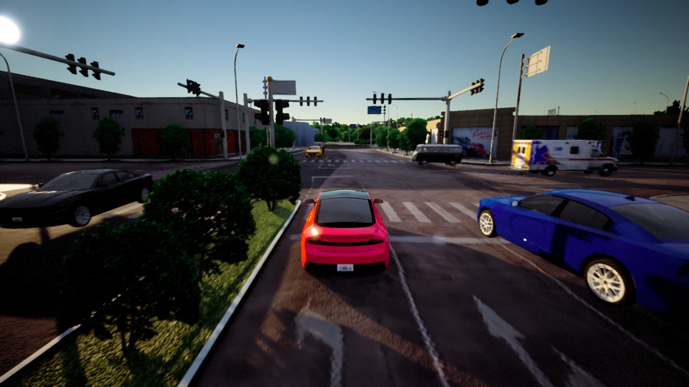
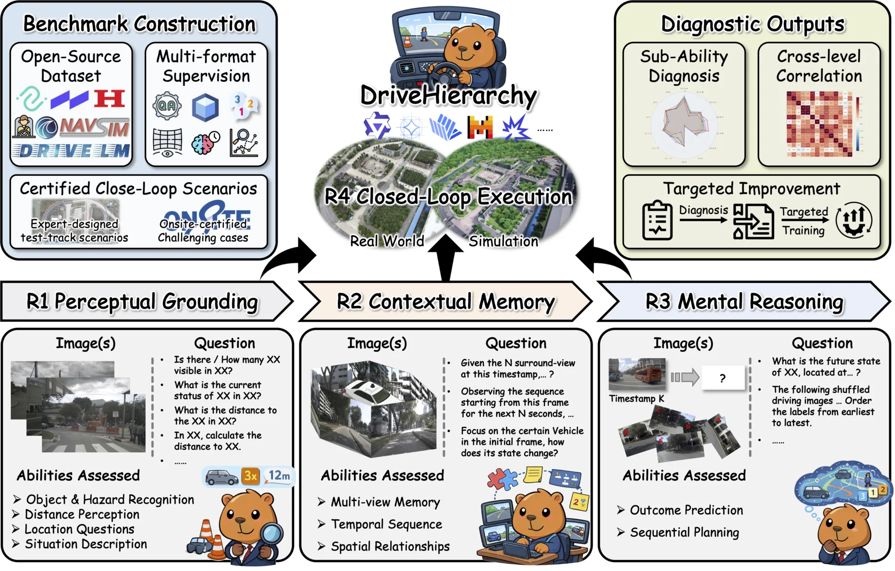
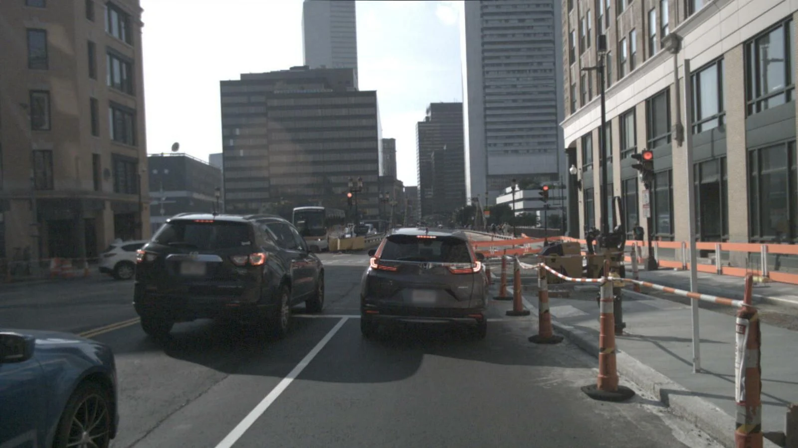
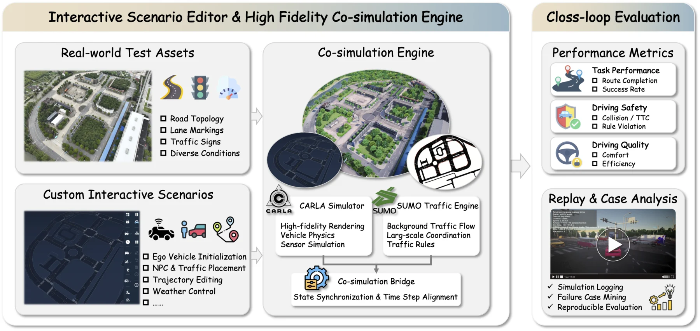
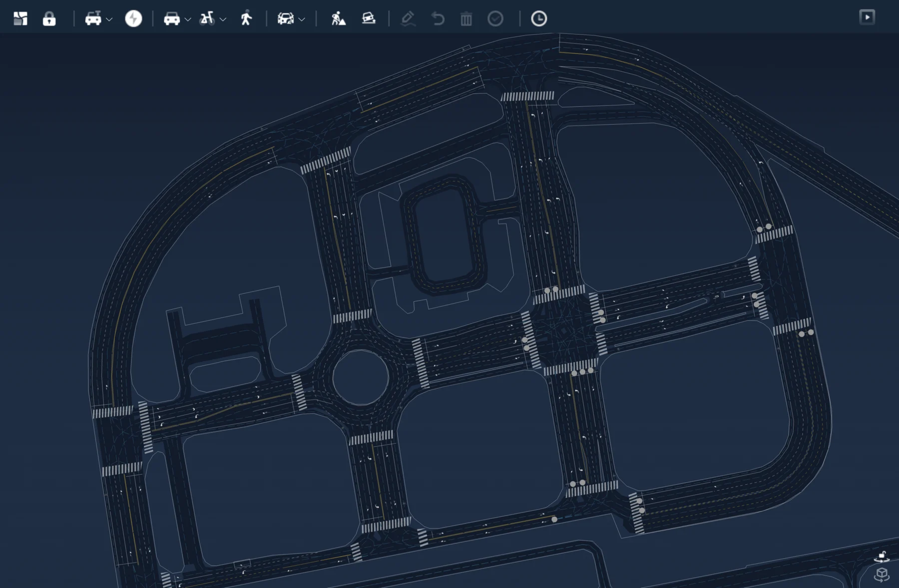
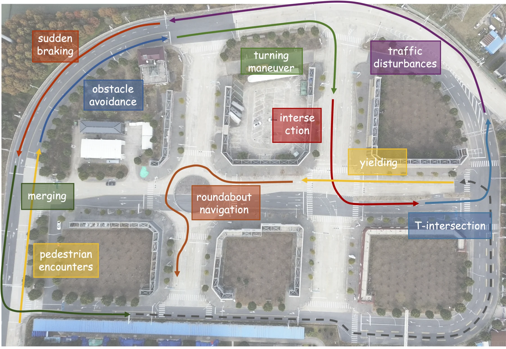
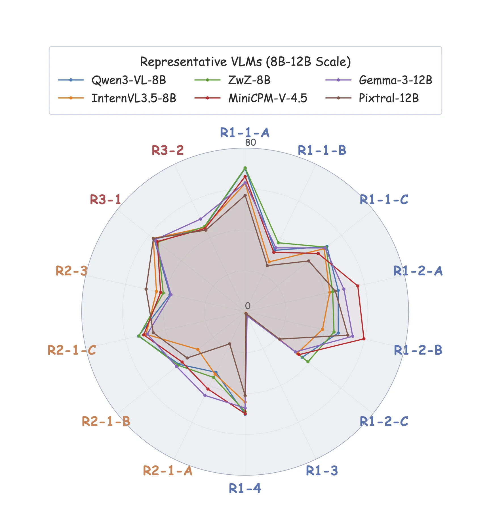

Set the starting point
Initialize the ego vehicle's placement and state.

SEE THE CAPABILITY. UNDERSTAND THE DRIVE.
A Benchmark for Diagnosing VLM Driving Capabilities
from Open-Loop Understanding to Closed-Loop Execution
1 Tongji University2 UNC Chapel Hill
Driving intelligence is more than one ability. Its evaluation should be, too.
DriveHierarchy connects perceptual grounding, contextual memory, and mental reasoning to closed-loop driving. It reveals where VLMs succeed, where they struggle, and which capabilities offer targets for improvement.
Paper evaluation: 14,000 open-loop records across 14 tasks, with 1,000 records per task. Full-corpus statistics are shown above.

View full figure ↗Evaluating VLM-based autonomous driving remains difficult because driving competence is composite: a capable system must ground traffic participants and hazards, integrate context across views and time, reason about future evolution, and act appropriately under closed-loop interaction. DriveHierarchy organizes these capabilities into four ranks. It integrates multiple open-source autonomous-driving datasets into a unified open-loop benchmark and provides a closed-loop simulation platform with interactive scenario construction on a real-world road network. Experiments on 15 VLMs reveal structured but non-redundant capability variation, connect open-loop understanding to closed-loop driving, and support targeted diagnosis and benchmark-guided optimization.
Condensed from the paper abstract.
Explore the abilities behind driving behavior.
Select a rank to see what it measures.

OPEN-LOOP / VISUAL OBSERVATIONRecognize traffic participants and hazards, estimate distances, localize referred objects, and describe the current traffic situation.
Turn a driving question into a custom scenario.
Visually configure actors, trajectories, and conditions without writing scenario scripts.

View full platform ↗Initialize the ego vehicle's placement and state.
Place vehicles, pedestrians, and other dynamic actors around the ego vehicle.
Edit actor trajectories to create merging, yielding, and crossing interactions.
Configure weather and refine the scene around your research question.
CARLA supplies rendering, vehicle physics, and sensor simulation.
SUMO coordinates background traffic. Logs and replay help you investigate failures.
The actual visual interface for configuring your driving scenarios.

Explore the interface ↗Built on a real-world road layout.
Curated to challenge interactive execution.
Detect crossing intent, decelerate in time, yield when required, and resume only after the conflict region is clear.

Generalist and driving-specialized models,
evaluated across understanding and execution.
| Rank | Model | Parameters | Open-loop score ↑ | Closed-loop score ↑ |
|---|
15 models · Tables 1 & 2 in the paper. The two scores use different evaluation protocols and should not be compared numerically across columns.
Compare task-level strengths within a model family or across similarly sized models.
Figure labels R2-1-A/B/C correspond to repository tasks R2_1, R2_2_A, and R2_2_B. These profiles cover R1–R3.

View full figure ↗Open-loop capability supervision can transfer to closed-loop behavior.
In a Qwen3-VL-8B-Instruct case study, jointly fine-tuning on the identified weak capability groups raises the average R4 score from 0.902 to 8.021. R4 was never a supervision target.
One base model, under the paper's protocol. Table 4 reports the closed-loop transfer study.
Spearman correlations with R4 across the evaluated models.
@inproceedings{xu2026drivehierarchy,
title = {{DriveHierarchy}: A Benchmark for Diagnosing {VLM} Driving
Capabilities from Open-Loop Understanding to Closed-Loop Execution},
author = {Xu, Chengkai and Liu, Jiaqi and Guo, Yicheng and Hang, Peng and Sun, Jian},
booktitle = {Advances in Neural Information Processing Systems},
year = {2026},
url = {https://github.com/PerfectXu88/DriveHierarchy}
}Citation based on the accepted manuscript; final proceedings metadata can be added when available.